object aware encoder / generative models
object-aware的encoder/生成模型
object aware representations
- keyword:
- blockGAN被引
- SRN被引中带object
[Encoder] <ROOTS> "Learning to Infer 3D Object Models from Images"/"Object-Centric Representation and Rendering of 3D Scenes"
[ 2020 ] [paper] [paper_v1] [ 
Rutgers University ]
[ Chang Chen, Fei Deng, Sungjin Ahn ]
[ scene encoder, GQN-based, 3D object detection ]
main preliminary: GQN
Click to expand
-
Motivation
- 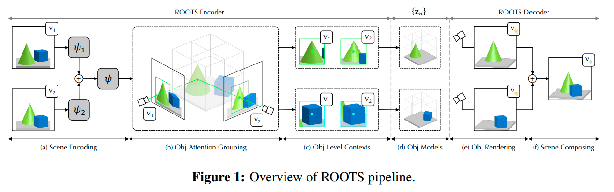
-
前景背景区分方式： 通过其
Scene Encoder；其实是在GVFM下做3D物体检测- 把3D 空间分为 \(N_{max}=N_x \times N_y \times N_z\) 个cell，每个最多检测1个物体（类似Yolo，扩展到三维）；
- 检测是否有一个物体其中心落在了cell内；如果有，那么回归出一个连续量 \(\boldsymbol{z}_{ijk}^{where} \in \mathbb{R}^3\) 来specify坐标
- 具体做法：把一系列context 观测 \(\mathcal{C}=\{(\boldsymbol{x}_c, \boldsymbol{y}_c)\}\) encode into a Geometric Volume Feature Map 三维体素特征空间 \(\boldsymbol{r} \in \mathbb{R}^{N_x \times N_y \times N_z \times d}\) ，逐个cell infer 是否有物体以及中心点坐标
- GVFM需要把一系列partial observation aggregate起来；
- ① 对\(\mathcal{C}\) 计算一个order-invariant summary \(\psi\) ：\(\psi=\sum_{c=1}^{\lvert\mathcal{C} \rvert} \psi_{\mathcal{c}}=\sum_{c=1}^{\lvert\mathcal{C} \rvert} f_\psi(x_c, y_c)\)
- ② 对 \(\psi\) 应用一个3D transposed convolution 来把 scene-level 表征\(\psi\) split 成单个的\(\boldsymbol{r}_{ijk}\) slots
-
主要贡献
- object-aware scene encoder，把一系列观测首先映射到体素特征空间，再逐cell检测回归有无物体及中心坐标
- ==思考== ：
- 这个decoder可以设法用于我们的拓扑图构建
- 我们是用拓扑图的形式来organize各个物体；每个feature只来自于一个物体的观测，也只存一个物体的信息
- ==思考== ：
- 重点考虑了object level如何重建图片；对我们会有一定帮助
- object-aware scene encoder，把一系列观测首先映射到体素特征空间，再逐cell检测回归有无物体及中心坐标
- 效果
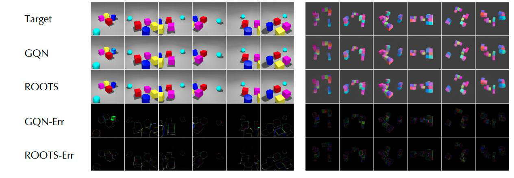
"Self-supervised Learning of 3D Objects from Natural Images"
[ 2019 ] [paper] [ 
The University of Tokyo ] [ 
RIKEN ]
[ Hiroharu Kato and Tatsuya Harada ] < RGBD-GAN 同组>
[ natural images ]
Click to expand
- Motivation
- 自监督的方式，从真实世界图片中提取出3D物体
-
两阶段训练
- 首先学习一个base shape，然后从base shape到full model
- 如果不用两阶段训练，学习到的形状都变成了一个椭球，变得模糊化了。
-
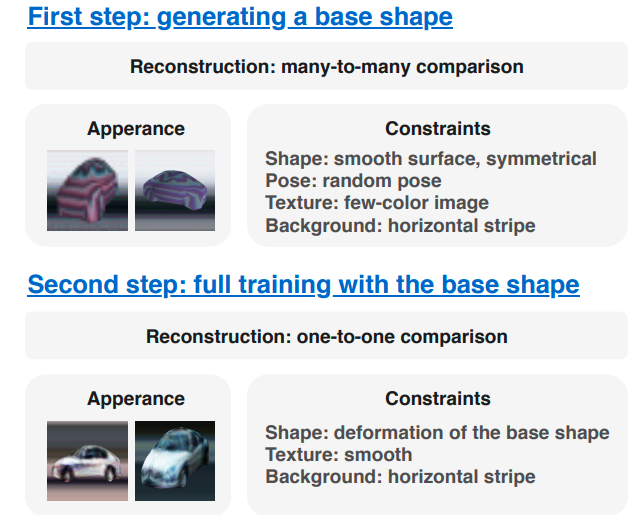
-
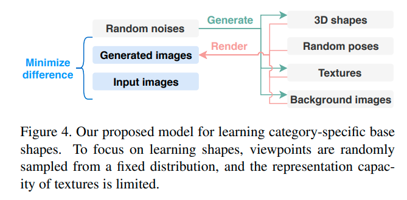 - 主要贡献
-
为了应对复杂的形状、复杂的真实世界背景，使用对于物体表面和背景的强regularization To suppress it, we propose using strong regularization and constraints on object surfaces and background images. 可以从cifar10, pascal这样的数据集中重建出各种各样的物体 由于数据集中经常有ill-posed摆放的图片，学习出并且利用先验知识是关键。 Since this is a severely ill-posed problem, learning and leveraging the prior knowledge of objects is the key to this task.
"Multi-Object Representation Learning with Iterative Variational Inference"
[ 2019 ] [paper] [[code]] [ 
University ] [ 
company ]
[ xxxx ]
[ abcd ]
Click to expand
- Motivation
"Reconstruction Bottlenecks in Object-Centric Generative Models"
[ 2020 ] [paper] [[code]] [ 
University ] [ 
company ]
[ xxxx ]
[ GENESIS-based, efgh ]
Click to expand
- Motivation
"RELATE: Physically Plausible Multi-Object Scene Synthesis Using Structured Latent Spaces"
[ 0000 ] [paper] [code] [web] [video] [ 
University ] [ 
company ]
[ xxxx ]
[ baseline->GENESIS, efgh ]
Click to expand
-
Motivation
- 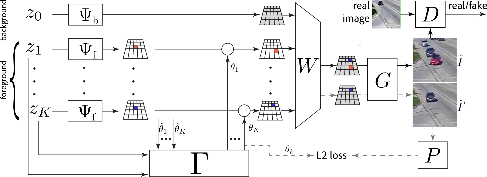
"Learning 3D Object-Oriented World Models from Unlabeled Videos"
[ ICMLW2020 ] [paper] [ 
McGill University ]
[ Eric Crawford, Joelle Pineau ]
[ SRN-based, 3D objects moving through a 3D world, probabilistic, encoder/detector focused ]
main preliminary: SRN
Click to expand
| 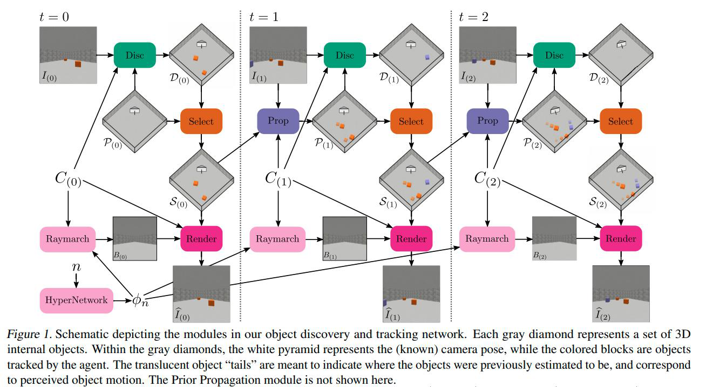 |
|---|
-
Motivation
- 不仅可以从感知流中分割出物体
- 而且可以提取物体的3D信息、在3D空间中跟踪他们
-
主要特点
- 用的是SRN
- 物体是运动的；视频输入
"Neural Graphics Pipeline for Controllable Image Generation"
[ 2020 ] [paper] [[code]] [ 
University ] [ 
company ]
[ xxxx ]
[ abcd ]
Click to expand
-
Motivation
- 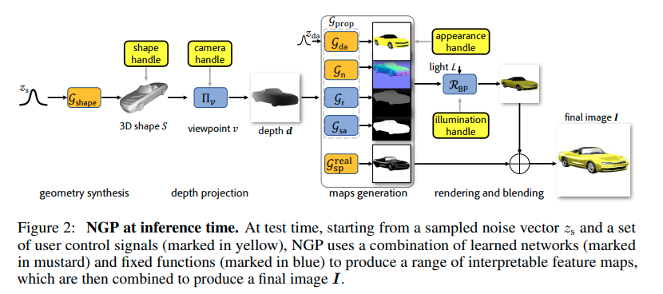
"Rotationally-Temporally Consistent Novel View Synthesis of Human Performance Video"
[ ECCV2020 ] [paper] [ 
University of North Carolina ] [ 
Adobe,Korea Advanced Institute of Science and Technology ]
[ Youngjoong Kwon, Stefano Petrangeli, Dahun Kim, Haoliang Wang, Eunbyung Park, Viswanathan Swaminathan, Henry Fuchs ]
[ Novel View Video Synthesis, Synthetic Human Dataset ]
Click to expand
-
Motivation
- 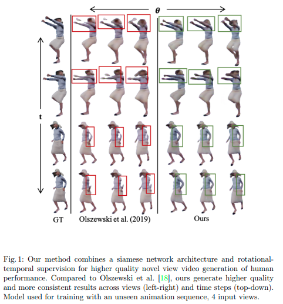
< 3D object aware video generation> "Unsupervised object-centric video generation and decomposition in 3D"
[ NeurIPS2020 ] [paper] [code] [web] [ 
IST Austria ]
[ Paul Henderson, Christoph H. Lampert ]
[ encoder-decoder, object-centric generative models, inspired by classical image segmentation,object tracking ]
[ review: 从视频中分解出物体（及运动）与背景的3D表征，传统机器学习功底深厚，loss设计值得研究；利用了视频中的一些hint (object tracking)，没有用到多视几何 ]
Click to expand
-
Motivation
- 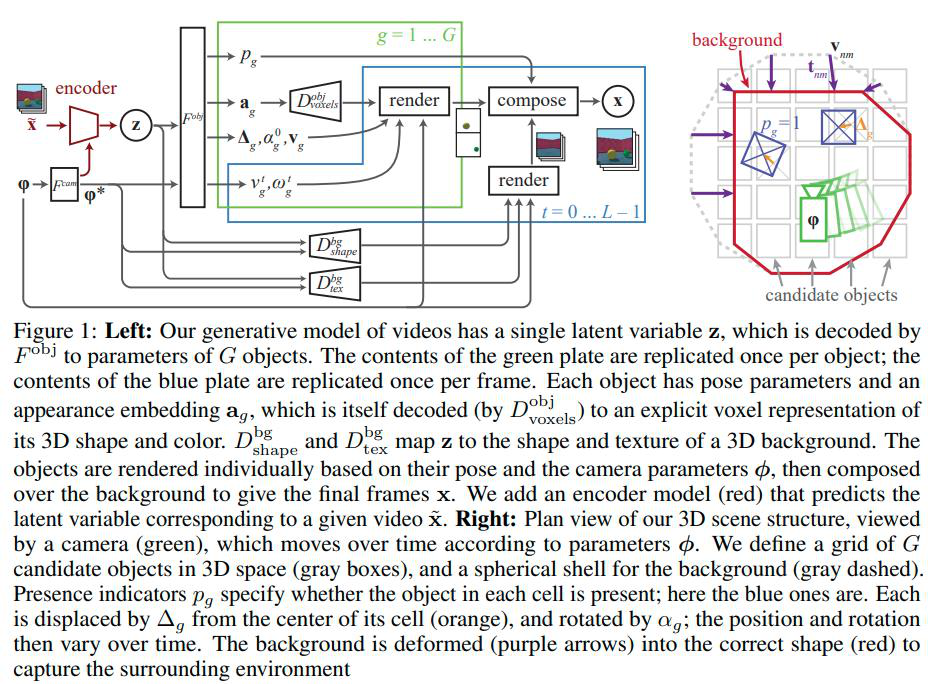
-
前景背景区分方式
- 通过encoder 编码 context views of a video \(\{x_z, v_z\}\) 为两个隐向量：scene embedding和camera paramter embedding，把这两个embedding decode为逐个cell中的是否有物体 + 各个物体的外观、pose参数 + 背景形状、材质
- 借鉴了传统CV中图像分割的一些思想，依靠强大的loss设计，用encoder-decoder的方式实现了视频生成。泛化性未知
-
主要贡献
- 通过预测分割mask、随时间跟踪物体，把一段given video 分解为其组成物体、背景
- 通过预测深度、3D bbox， determine 场景及物体的3D结构
- 生成连贯的视频，视频中物体在一个3D背景中进行3D空间移动
-
主要特点
- 从single latent code z decode into G 个 objects的参数 和 背景的形状、材质
- 每个object逐个被 decode为 pose parameter 和 apperance embedding
- pose parameter具体操作：
- 把空间划分为grid，每个cell infer是否有物体(0/1) ，infer每个物体距离cell中心的位移、旋转（并且都是随时间变化的）
- 把每个物体的pose时间t序列 、外观embedding、背景形状、材质 随时间逐帧渲染
- ego-centric model
-
==loss / regularization== （*由于从2D videos中infer 3D结构是inherently ambiguous，因此需要regularization来避免degerate solutions*）
- L1 regularization on 物体速度大小：discourages local minima, 防止模型不能track物体
- hinge regularization on 物体存在概率：discourages 物体在优化早期在shape还没适应(学到)时就消失
- (inspired by 图像分割 任务中的Markov random fiields) we penalize edges in the reconstructed foreground mask for occurring in areas of the original image that have small gradients. ：This discourages undesirable but mathematically-correct solutions where an object is in front of an untextured surface, and parts of that surface are incorporated in the object rather than the background.
- Q: what ??
- standard mesh regulirazers for 背景、mesh物体，避免degenerate shapes：L2 on Laplacian curvature, L1 on angles between faces, L1 on edge lenghts variance
"Unsupervised Discovery of Object Landmarks via Contrastive Learning"
[ 0000 ] [paper] [[code]] [ 
MIT ] [ 
company ]
[ xxxx ]
[ abcd ]
Click to expand
- Motivation
"UNSUPERVISED DISCOVERY OF PARTS, STRUCTURE, AND DYNAMICS"
[ 0000 ] [[paper]] [[code]] [ 
University ] [ 
company ]
[ xxxx ]
[ abcd ]
Click to expand
- Motivation
"FroDO: From Detections to 3D Objects"
[ CVPR2020 ] [paper] [[code]] [ 
UCL, The University of Adelaide ] [ 
Facebook ]
[ Martin Runz, Kejie Li, Meng Tang, Lingni Ma, Chen Kong, Tanner Schmidt, Ian Reid, Lourdes Agapito, Julian Straub, Steven Lovegrove, Richard Newcombed]
[ natural dataset, mask-RCNN, pre-learnt shape priors ]
Click to expand
-
Motivation
- 从一个定位好的RGB输入序列，检测出物体并infer他们的pose和一个progressively fine grained and expressive 物体shape表征
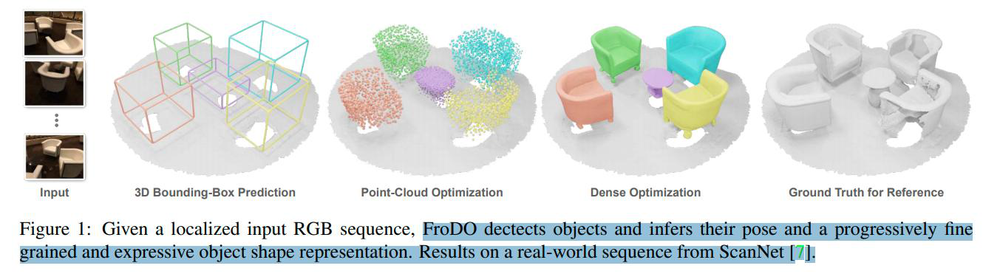
- 从一个定位好的RGB输入序列，检测出物体并infer他们的pose和一个progressively fine grained and expressive 物体shape表征
-
前景背景区分方式
- 使用一个标准的检测、分割框架：mask RCNN
- 重点不在分割，而在对分割出来的物体multi view encoder成一个合适的object shape embedding
| 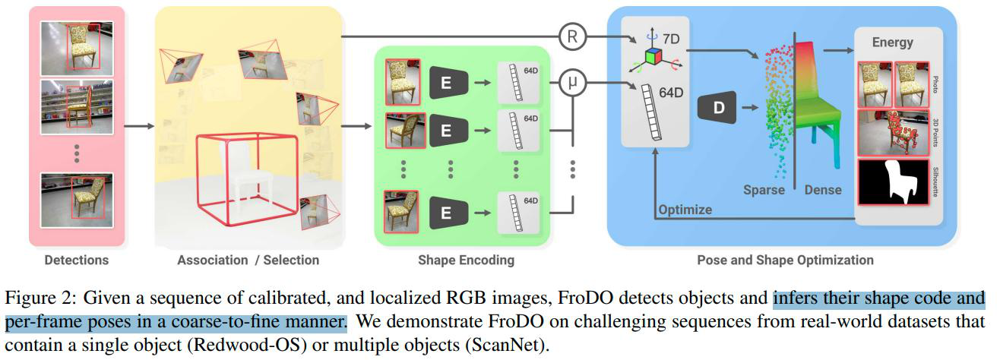 |
|---|
| 把 |
| 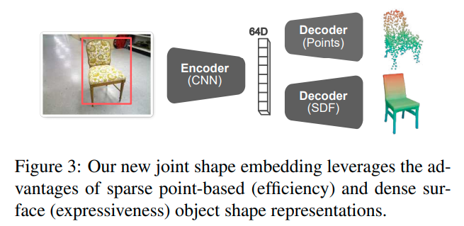 |
|---|
| 提出了一种新的joint shape embedding，利用了稀疏点云表征的效率和稠密surface表征的表达能力 |